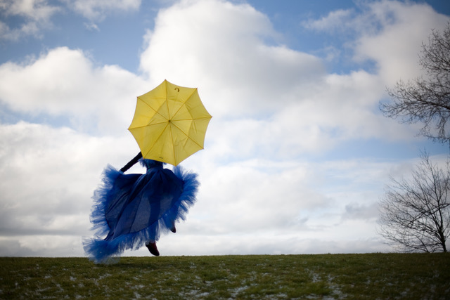

This section should be transparent and show the background image through it.
The playfulness and creativity that clients bring to a photoshoot are what I love most. It’s a collaboration, an artistic partnership, where we create together, capturing not just a pose but an experience, a feeling.